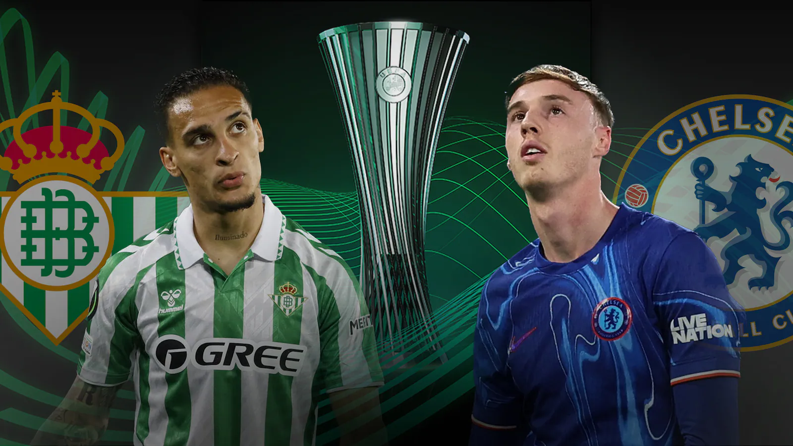

Principales Títulos
El Real Betis Balompié, uno de los clubes más importantes de España, ha logrado una serie de títulos tanto a nivel nacional como internacional, reflejando su historia rica y exitosa. A continuación, se destacan algunos de los logros más importantes:
La Liga
Campeón: 1935
El Real Betis ganó su único título de La Liga en 1935, bajo la dirección del británico Patrick O'Connell. Este logro histórico consolidó al club como un referente del fútbol español en aquella época.
Copa del Rey
Campeón: 1977, 2005, 2022
El Real Betis ha ganado la Copa del Rey en tres ocasiones, una de las competiciones más prestigiosas del fútbol español. Estos son los logros más destacados:
- 1977: El Betis logró su primera Copa del Rey tras vencer al Athletic Club en una histórica final.
- 2005: En una remontada épica, el Betis venció al Osasuna en la final, consiguiendo su segundo título de Copa en la historia.
- 2022: En un torneo memorable, el Real Betis ganó su tercera Copa del Rey en una final contra el Valencia, consolidando su regreso al más alto nivel del fútbol español.

Logros Internacionales
El club ha participado regularmente en competiciones europeas, especialmente en la UEFA Europa League, donde ha tenido actuaciones destacadas, reflejando su relevancia en el panorama internacional.
Actualmente el club de helipolis tiene un objetivo en mente y es ganar la final de la Conferenece League contra el equipo ingles el 28 de mayo en Polonia
